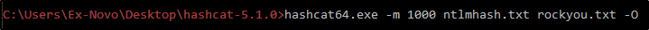

Cracking NTLM Hashes with Hashcat
Now we can try to crack those hashes:
For semplicity, we can try to crack only the Administrator, Frank Castle and Peter Parker Account:
Those are NTLM hashes (hashes catched with responder are
NTLMv2
)
REMEMBER: YOU CAN PASS NTLM HASHES, BUT NOT NTLMv2 HASHES!!!
Better use hashcat and try to crack those hashes:
We can see that the Administrator have no password, that means the account is
DISABLED

Once we found that, we can pass those accounts to other PCs and get more hashes!!